１１日目(9/14)～Arctic Canada(極北)～
Fort Nelson to
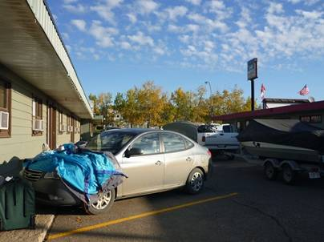
朝から気持ちの良い晴れ。しかし、とても寒い･･･。朝露で干しておいたテントは逆に濡れてしまっていた。日光に当てるとすぐにさらさらに乾いてくれた。
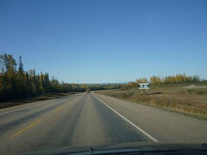
今日も朝食はA&Wでハンバーガーを食べた。エドモントンのショッピングモール内の店舗でクーポンをもらっていたので格安の値段で食べることができる。一人３ドルもあれば十分満腹になれる。A&Wはマックに比べ肉にこだわっているようで、フィレオフィッシュのようなメニューは無く、どのバーガーにも肉が使われている。特に今回の旅では結局食べなかったが、グランパバーガーの３枚重ねの肉は圧巻だ。
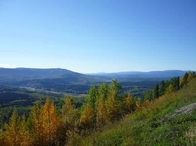
景色が良いので何度も車を止めてしまう。北上を続けているので、平均気温はどんどん下がっているようだ。紅葉が進んでいくのがはっきりとわかる。カナダの紅葉は、日本と違い赤色はほとんど見ない。黄色一色に近く、まるで黄金色の絨毯があちこちに敷かれているように見えた。
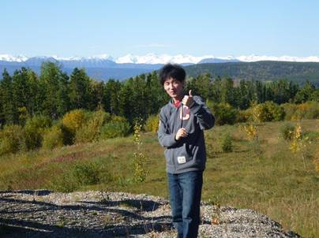
Summit
Passからの眺め。遥か遠くには真っ白の山脈が見えた。まだ９月だと言うのに、完全な雪山だ。おそらくノーザンカナディアンロッキーの一角だろう。万年雪に覆われたウィルダネスの世界に、今から飛びこむ。
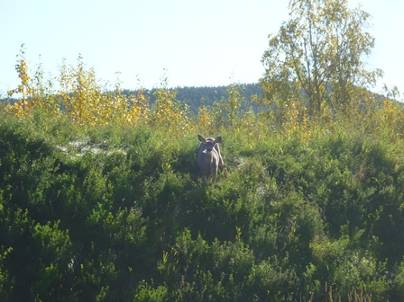
走っていると道端に何か動くものが。車を止めてみると、シカような生き物が草を食べていた。じっとこちらを見つめていたが、逃げようとはしなかった。
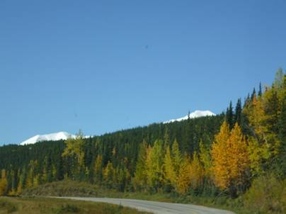 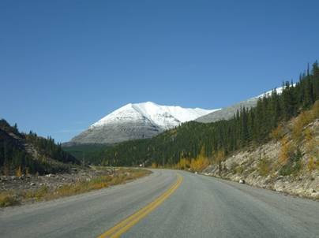 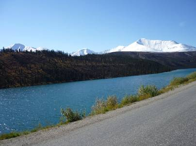
紅葉と雪山のコントラストが美しい。標高によって雪に覆われた白い部分と山肌の黒い部分がはっきりと分かれていた。


再び動物に遭遇！今度は群れだ。子連れのミュールジカの家族だろうか。
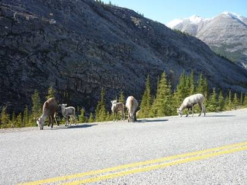
今度はヤギの家族。車を止めても、まったくこちらにはお構いなし。道路には特に何も落ちてはいないように見えるのに、他には一切関心を示さずひたすら何かを食べているようだった。
またもや動物に遭遇。角の短いムース(ヘラジカ)か、あるいは･･･。山岳地域に入ってからいきなり動物に遇うようになった。カナディアンロッキーはまさに大型野生動物の楽園。
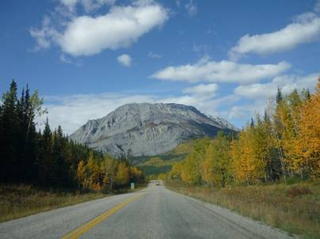
緯度が高いせいか、次第に山には全く樹林が見られなくなった。黒い山肌がむき出しになっている。
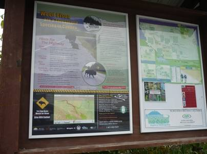

少し雲が出てきた。MUNCHO LAKEのほとりで小休止。案内板を見ると、このあたりではバイソンが出る。毎年交通事故に遭い、何頭も死んでいるという記事だった。写真を見る限り、でかくて顔が怖い。去年も極北エリアではよくバイソン注意という道路標識を見たが、結局実際にバイソンを見たことは無かった。おそらく頭数は少なく、そうめったに出会うことはないのだろう･･･
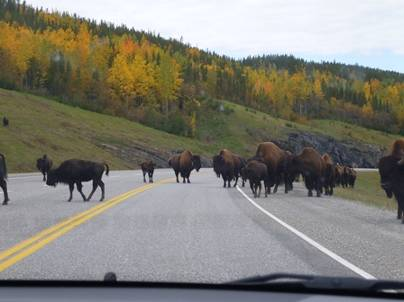
と思ったのもつかの間。休憩場所から少し車を走らせると、前方に黒い点々が見え、近づくとそれがバイソンの群れであることが判明！！おびただしい数に圧倒される。しかし、道路を占領しているのでかなり邪魔だ。クラクションを鳴らしてどいてもらおうとするが、彼らに人間の常識が通じるはずも無く、全く動こうとはしなかった。そのあまりの無反応ぶりに、クラクションを鳴らして数秒後、これはまずいという恐怖に襲われた。彼らに突進でもされようものなら、たとえ車の中にいても相当な被害を受けることは疑いようもなかった。
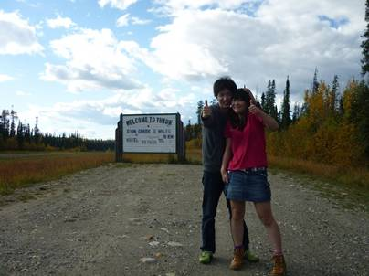
ワトソンレイクの手前でついに北緯60度を越えた。ここから北は極北と呼ばれ、極寒の地だ。
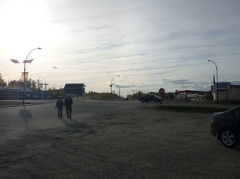 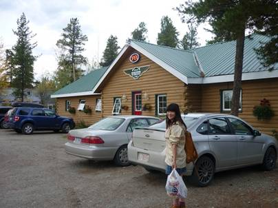
ワトソンレイクに到着。建物も少なく、スーパーもどこにあるのか分からない、相当な田舎に来てしまった。フォートネルソンから何百キロも走ったと言うのに、こんな田舎しかないなんて。今晩の宿、Air Force Lodgeはかなり綺麗な丸太作りの宿。部屋は狭く、風呂やトイレは共同だが隅々まで掃除は行き届いており、店主もフレンドリー。宿で少し落ち着いた後、晩飯を食べようと街に行くが、レストランらしきものが見あたらず、モーテル内のレストランで暖かい料理を食べた。